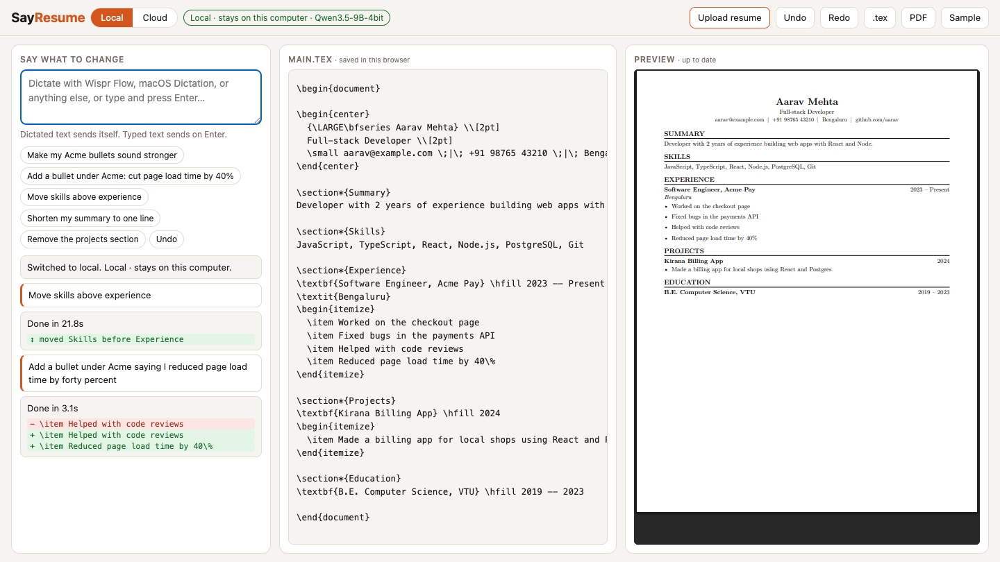

Edit the source, compile, check the PDF, repeat. Tailoring for ten roles means ten loops.
% eats the lineWrite “cut load time by 40%” and LaTeX treats the rest of the line as a comment. Nothing warns you.
Point-and-click resume tools skip the pain, but you give up the control that made you pick LaTeX.
You know what you want to change. Typing it into LaTeX is the slow part.

| “Make my Acme bullets sound stronger” | Rewrites those bullets, keeps the facts |
| “Add a bullet: reduced page load time by forty percent” | Adds \item … 40\% with the % escaped |
| “Move skills above experience” | Moves the section; nothing lost or duplicated |
| “Remove the projects section” | Deletes it cleanly |
| “Actually, undo that” | Instant undo, no model call |
| “Add my job at Google” | Asks for the title and dates instead of inventing them |
Qwen3.5-9B on your Mac via oMLX. Free; your resume never leaves the machine.
Qwen 3.7 Flash via OpenRouter: about 1 s per edit, roughly $0.08 per 1,000 edits (list price).
9 of 9 spoken commands correct in both modes. 3 of 7 benchmarked models scored 8/8 twice.
Live demo (Cloud mode)
sayresume.vercel.app
Source
github.com/codebyNJ/sayresume
Voice is the interface: hold Fn, say the change, let go. Wispr Flow turns speech into text in the command box and SayResume sends it on its own.
Run it locally (model setup is in the README):
brew install tectonic omlx start npm start
Honest limits: PDF/DOCX imports use one fixed one-page template, so review the result. Free cloud models were unreliable, which is why Cloud uses cheap paid ones.